Data Modification
Bill Perry
2018/03/14
Correlation and Regression
##Load libraries We will read in the main files and load the libraries as we have worked with so far.
# One new package for summary stats
# install.packages("broom")
# install.packages("GGally")
# install.packages("car")
# install.packages("gvlma")
# install.packages("corrplot")
# install.packages("gvlma")
# load the libraries each time you restart R
library(tidyverse)
library(readxl)
library(lubridate)
library(scales)
library(skimr)
library(janitor)
library(patchwork)
# library(reshape2)
library(broom)
library(GGally)
library(corrplot)
library(car)
library(gvlma)# read in the file
iris.df <- read_excel("data/iris_excel.xlsx") %>%
clean_names() %>%
remove_empty(c("rows", "cols"))
glimpse(iris.df)## Observations: 150
## Variables: 5
## $ sepal_length <dbl> 5.1, 4.9, 4.7, 4.6, 5.0, 5.4, 4.6, 5.0, 4.4, 4.9, 5…
## $ sepal_width <dbl> 3.5, 3.0, 3.2, 3.1, 3.6, 3.9, 3.4, 3.4, 2.9, 3.1, 3…
## $ petal_length <dbl> 1.4, 1.4, 1.3, 1.5, 1.4, 1.7, 1.4, 1.5, 1.4, 1.5, 1…
## $ petal_width <dbl> 0.2, 0.2, 0.2, 0.2, 0.2, 0.4, 0.3, 0.2, 0.2, 0.1, 0…
## $ species <chr> "setosa", "setosa", "setosa", "setosa", "setosa", "…##An excellent description of the stats for AOV and regression is here:
https://www.zoology.ubc.ca/~schluter/R/fit-model/
##Summary Statistics for the better look ##So this is a lot different than thinking about data from excel
Lets try to do the summary stats on the data now and see how it differs
# the data you want to look at
skim(iris.df)## Skim summary statistics
## n obs: 150
## n variables: 5
##
## ── Variable type:character ─────────────────
## variable missing complete n min max empty n_unique
## species 0 150 150 6 10 0 3
##
## ── Variable type:numeric ───────────────────
## variable missing complete n mean sd p0 p25 p50 p75 p100
## petal_length 0 150 150 3.76 1.77 1 1.6 4.35 5.1 6.9
## petal_width 0 150 150 1.2 0.76 0.1 0.3 1.3 1.8 2.5
## sepal_length 0 150 150 5.84 0.83 4.3 5.1 5.8 6.4 7.9
## sepal_width 0 150 150 3.06 0.44 2 2.8 3 3.3 4.4
## hist
## ▇▁▁▂▅▅▃▁
## ▇▁▁▅▃▃▂▂
## ▂▇▅▇▆▅▂▂
## ▁▂▅▇▃▂▁▁Look at the relationships the hard way
iris.df %>% ggplot(aes(x=species, y=petal_width )) + geom_boxplot()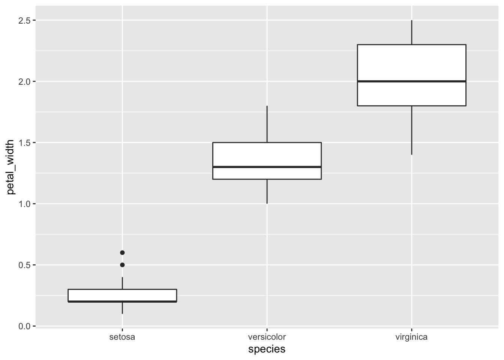
Long to Wide format
# this will add an index to the dataframe so you know what individual is which
iris_long.df <- iris.df %>%
# mutate(sample = row_number()) %>%
gather(part, measure, -species)Outliers
# Box Plots of data
iris_long.df %>%
ggplot( aes(x = part, y = measure, color = species, fill=species))+
geom_boxplot(alpha=0.3) 
Test for normality of data and using the broom package
So I think this is premature but some people like to test the normality of the data but really you should be assessing the normality of the residuals. But here it goes…
# turn off scientific notaton
options(scipen = 999)
# to turn back on
#options(scipen = 0)
# Test for normality of each group and store in shapirowilktests
# This uses the broom package to get clean output of the test
iris_long.df %>% group_by(species, part) %>% do(tidy(shapiro.test(.$measure)))## # A tibble: 12 x 5
## # Groups: species, part [12]
## species part statistic p.value method
## <chr> <chr> <dbl> <dbl> <chr>
## 1 setosa petal_length 0.955 0.0548 Shapiro-Wilk normality te…
## 2 setosa petal_width 0.800 0.000000866 Shapiro-Wilk normality te…
## 3 setosa sepal_length 0.978 0.460 Shapiro-Wilk normality te…
## 4 setosa sepal_width 0.972 0.272 Shapiro-Wilk normality te…
## 5 versicolor petal_length 0.966 0.158 Shapiro-Wilk normality te…
## 6 versicolor petal_width 0.948 0.0273 Shapiro-Wilk normality te…
## 7 versicolor sepal_length 0.978 0.465 Shapiro-Wilk normality te…
## 8 versicolor sepal_width 0.974 0.338 Shapiro-Wilk normality te…
## 9 virginica petal_length 0.962 0.110 Shapiro-Wilk normality te…
## 10 virginica petal_width 0.960 0.0870 Shapiro-Wilk normality te…
## 11 virginica sepal_length 0.971 0.258 Shapiro-Wilk normality te…
## 12 virginica sepal_width 0.967 0.181 Shapiro-Wilk normality te…#You can do this on all variables faster with if there was only one grouping
# tapply(iris_long.df$measure, iris_long.df$species, shapiro.test)Correlations Plots
This info is from:
http://stackoverflow.com/questions/29697009/correlation-matrix-plot-with-ggplot2
and
https://www.r-bloggers.com/plot-matrix-with-the-r-package-ggally/
and
http://ggobi.github.io/ggally/#canonical_correlation_analysis
iris.df %>% select(sepal_length, sepal_width, petal_length, petal_width) %>%
ggpairs()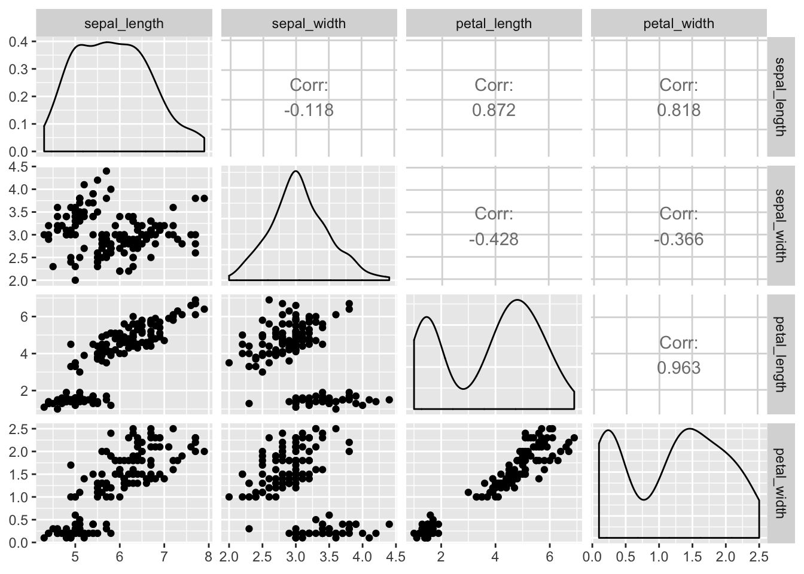
##Look at the correlation matrix
# correlation matrix of the data with only the numeric data in a dataframe
# the old way - the same really
# cor(setosa.df[,1:4], method = "pearson") # , method = c("pearson", "kendall", "spearman")
# need to only have numeric varaibles
iris.df %>% select(-species) %>% cor() ## sepal_length sepal_width petal_length petal_width
## sepal_length 1.0000000 -0.1175698 0.8717538 0.8179411
## sepal_width -0.1175698 1.0000000 -0.4284401 -0.3661259
## petal_length 0.8717538 -0.4284401 1.0000000 0.9628654
## petal_width 0.8179411 -0.3661259 0.9628654 1.0000000Correlation test
petals.cor <- cor.test(iris.df$petal_length, iris.df$petal_width)
# can see by calling model
petals.cor##
## Pearson's product-moment correlation
##
## data: iris.df$petal_length and iris.df$petal_width
## t = 43.387, df = 148, p-value < 0.00000000000000022
## alternative hypothesis: true correlation is not equal to 0
## 95 percent confidence interval:
## 0.9490525 0.9729853
## sample estimates:
## cor
## 0.9628654# other way
cor.test(~ petal_length + petal_width, iris.df)##
## Pearson's product-moment correlation
##
## data: petal_length and petal_width
## t = 43.387, df = 148, p-value < 0.00000000000000022
## alternative hypothesis: true correlation is not equal to 0
## 95 percent confidence interval:
## 0.9490525 0.9729853
## sample estimates:
## cor
## 0.9628654str(petals.cor)## List of 9
## $ statistic : Named num 43.4
## ..- attr(*, "names")= chr "t"
## $ parameter : Named int 148
## ..- attr(*, "names")= chr "df"
## $ p.value : num 0.0000000000000000000000000000000000000000000000000000000000000000000000000000000000000468
## $ estimate : Named num 0.963
## ..- attr(*, "names")= chr "cor"
## $ null.value : Named num 0
## ..- attr(*, "names")= chr "correlation"
## $ alternative: chr "two.sided"
## $ method : chr "Pearson's product-moment correlation"
## $ data.name : chr "iris.df$petal_length and iris.df$petal_width"
## $ conf.int : num [1:2] 0.949 0.973
## ..- attr(*, "conf.level")= num 0.95
## - attr(*, "class")= chr "htest"# You can extract values from the cor.test() object like this:
petals.cor$estimate## cor
## 0.9628654petals.cor$p.value## [1] 0.00000000000000000000000000000000000000000000000000000000000000000000000000000000000004675004# This calculates the correlation coefficient and the degrees of freedom
iris.df %>% summarize(petal_cor = cor.test(petal_length, petal_width)$estimate,
nuts_df = cor.test(petal_length, petal_width)$parameter,
nuts.pvalue = cor.test(petal_length, petal_width)$p.value)## # A tibble: 1 x 3
## petal_cor nuts_df nuts.pvalue
## <dbl> <int> <dbl>
## 1 0.963 148 4.68e-86iris.df %>% do(tidy(cor.test(.$petal_length, .$petal_width))) ## # A tibble: 1 x 8
## estimate statistic p.value parameter conf.low conf.high method
## <dbl> <dbl> <dbl> <int> <dbl> <dbl> <chr>
## 1 0.963 43.4 4.68e-86 148 0.949 0.973 Pears…
## # … with 1 more variable: alternative <chr># can be done with grouping variables as well##Regressions
###Read in files
stds.df <- read_excel("data/standards.xlsx")
glimpse(stds.df)## Observations: 30
## Variables: 5
## $ replicate <dbl> 1, 2, 1, 2, 1, 2, 1, 2, 1, 2, 1, 2, 1, 2, 1, 2, 1, 2, …
## $ std <dbl> 0.000, 0.000, 0.005, 0.005, 0.010, 0.010, 0.020, 0.020…
## $ drp <dbl> 0.000, 0.000, 0.002, 0.006, 0.004, 0.003, 0.006, 0.006…
## $ tp <dbl> -0.002, -0.002, -0.001, -0.001, 0.000, 0.000, 0.002, 0…
## $ nh4 <dbl> 0.008, 0.008, NA, NA, 0.018, 0.018, 0.020, 0.020, 0.02…###Stds long
sts_long.df <- stds.df %>%
gather(analyte, abs, -replicate, - std)###Linear Regression
Linear regression models
# Fit our regression model
# regression formula and dataframte
drp.model <- lm(data=stds.df, drp ~ std)
# Summarize and print the results
summary(drp.model) # show regression coefficients table##
## Call:
## lm(formula = drp ~ std, data = stds.df)
##
## Residuals:
## Min 1Q Median 3Q Max
## -0.0041414 -0.0008169 0.0000548 0.0001750 0.0036839
##
## Coefficients:
## Estimate Std. Error t value Pr(>|t|)
## (Intercept) 0.0008144 0.0004281 1.902 0.0716 .
## std 0.3003270 0.0009545 314.640 <0.0000000000000002 ***
## ---
## Signif. codes: 0 '***' 0.001 '**' 0.01 '*' 0.05 '.' 0.1 ' ' 1
##
## Residual standard error: 0.001534 on 20 degrees of freedom
## (8 observations deleted due to missingness)
## Multiple R-squared: 0.9998, Adjusted R-squared: 0.9998
## F-statistic: 9.9e+04 on 1 and 20 DF, p-value: < 0.00000000000000022###AOV table of regression
anova(drp.model)## Analysis of Variance Table
##
## Response: drp
## Df Sum Sq Mean Sq F value Pr(>F)
## std 1 0.232855 0.232855 98998 < 0.00000000000000022 ***
## Residuals 20 0.000047 0.000002
## ---
## Signif. codes: 0 '***' 0.001 '**' 0.01 '*' 0.05 '.' 0.1 ' ' 1# # # # # # # # # # # # # # # # # #
# TYPE II SUM OF SQUARES
#
#
# # # # # # # # # # # # # # # # # #
Anova(drp.model, type="II")## Anova Table (Type II tests)
##
## Response: drp
## Sum Sq Df F value Pr(>F)
## std 0.232855 1 98998 < 0.00000000000000022 ***
## Residuals 0.000047 20
## ---
## Signif. codes: 0 '***' 0.001 '**' 0.01 '*' 0.05 '.' 0.1 ' ' 1# # # # # # # # # # # # # # # # # #
# TYPE III SUM OF SQUARES
#
## # # # # # # # # # # # # # # # # #
Anova(drp.model, type="III")## Anova Table (Type III tests)
##
## Response: drp
## Sum Sq Df F value Pr(>F)
## (Intercept) 0.000009 1 3.6186 0.07164 .
## std 0.232855 1 98998.2721 < 0.0000000000000002 ***
## Residuals 0.000047 20
## ---
## Signif. codes: 0 '***' 0.001 '**' 0.01 '*' 0.05 '.' 0.1 ' ' 1# NOTE THERE IS NO DIFFERENCE###Plot of the Regression {#simple_regplot}
plot(data=stds.df, drp ~ std, main="Regression Plot")
abline(drp.model, col="red")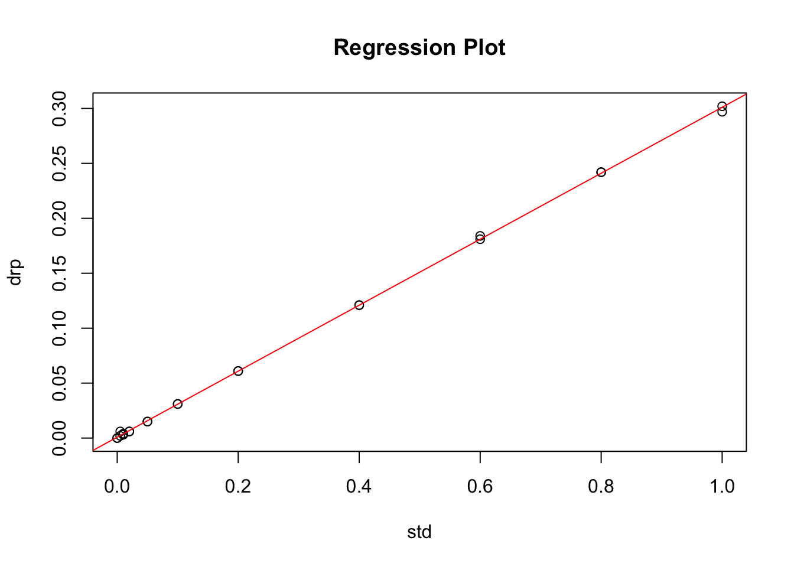
###Regression plot with GGPLOT which is a bit nicer in my opinion {#ggplot_regplot}
ggplot(stds.df, aes(x = std, y = drp)) +
geom_smooth(method = "lm") +
geom_point()## Warning: Removed 8 rows containing non-finite values (stat_smooth).## Warning: Removed 8 rows containing missing values (geom_point).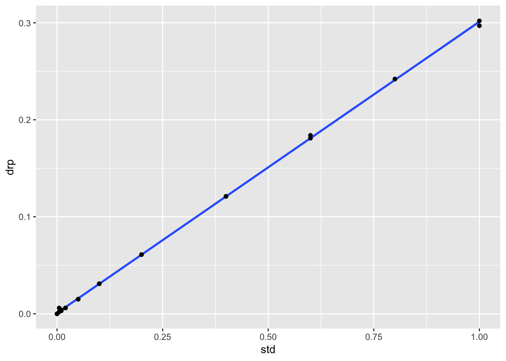
###We can use this to get more information about the model fit
# Confidence intervals for the sepal model
confint(drp.model)## 2.5 % 97.5 %
## (Intercept) -0.0000786454 0.001707489
## std 0.2983358854 0.302318032##Linear Regresson Assumptions
Ordinary least squares regression relies on several assumptions
1. residuals are normally distributed and homoscedastic
2. errors are independent
3. relationships are linear
Investigate these assumptions visually by plotting your model:
###Histogram of residuals
# histogram of residuals
hist(residuals(drp.model))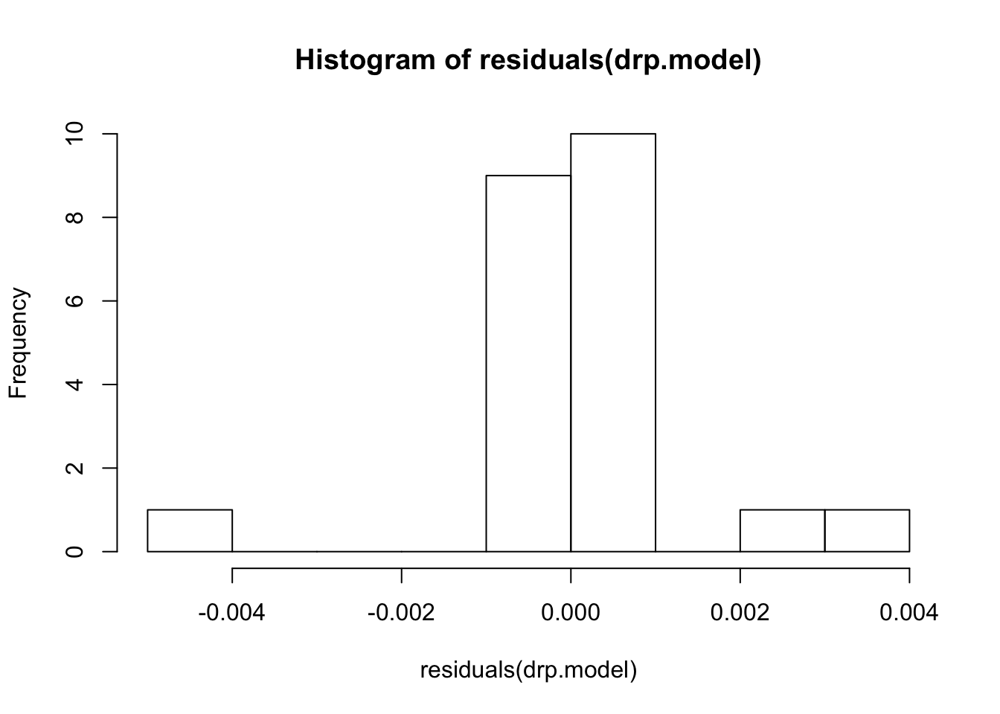
###Diagnostic Plots
par(mar = c(4, 4, 2, 2), mfrow = c(1, 2))
plot(drp.model, which = c(1, 2)) # "which" argument optional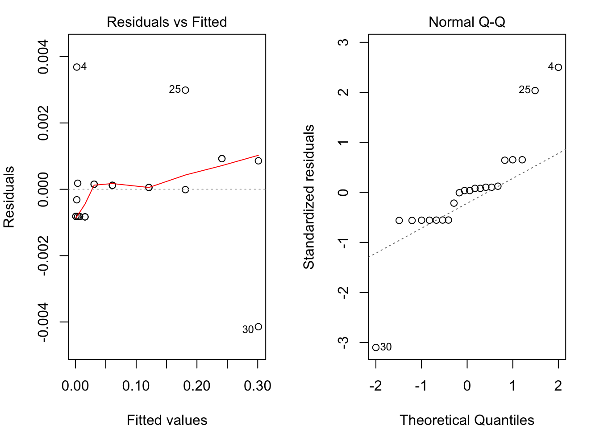
###Non‐constant Error Variance or Homoscedasticity
# Evaluate homoscedasticity
# non-constant error variance test
ncvTest(drp.model)## Non-constant Variance Score Test
## Variance formula: ~ fitted.values
## Chisquare = 5.294216, Df = 1, p = 0.021396###Test for normality of residuals
to confirm the qqplot
#Test for normality of residuals
shapiro.test(drp.model$res)##
## Shapiro-Wilk normality test
##
## data: drp.model$res
## W = 0.84232, p-value = 0.00249Save residuals for further analyses
# # now to put the residuals next to the data and make sure that NAs are included
# Not sure why it has an error but it works.
stds.df$residuals[!is.na(stds.df$std)]<-residuals(lm(data=stds.df, drp ~ std, na.action=na.omit))## Warning: Unknown or uninitialised column: 'residuals'.## Warning in stds.df$residuals[!is.na(stds.df$std)] <- residuals(lm(data
## = stds.df, : number of items to replace is not a multiple of replacement
## lengthhead(stds.df)## # A tibble: 6 x 6
## replicate std drp tp nh4 residuals
## <dbl> <dbl> <dbl> <dbl> <dbl> <dbl>
## 1 1 0 0 -0.002 0.008 -0.000814
## 2 2 0 0 -0.002 0.008 -0.000814
## 3 1 0.005 0.002 -0.001 NA -0.000316
## 4 2 0.005 0.006 -0.001 NA 0.00368
## 5 1 0.01 0.004 0 0.018 0.000182
## 6 2 0.01 0.003 0 0.018 -0.000818###Now to add in the predicted values
you could also do this with a formula from the output of the model
# this produces the fitted values for the model
fitted(drp.model)## 1 2 3 4 5
## 0.0008144216 0.0008144216 0.0023160564 0.0023160564 0.0038176911
## 6 7 8 13 14
## 0.0038176911 0.0068209607 0.0068209607 0.0158307695 0.0158307695
## 19 20 21 22 23
## 0.0308471174 0.0308471174 0.0608798133 0.0608798133 0.1209452050
## 24 25 26 27 28
## 0.1209452050 0.1810105967 0.1810105967 0.2410759884 0.2410759884
## 29 30
## 0.3011413801 0.3011413801###Store fitted values in dataframe
# now to see a plot of fitted and observed-----
stds.df$fitted[!is.na(stds.df$std)]<-fitted(lm(data=stds.df, drp ~ std, na.action=na.omit))## Warning: Unknown or uninitialised column: 'fitted'.## Warning in stds.df$fitted[!is.na(stds.df$std)] <- fitted(lm(data =
## stds.df, : number of items to replace is not a multiple of replacement
## lengthhead(stds.df)## # A tibble: 6 x 7
## replicate std drp tp nh4 residuals fitted
## <dbl> <dbl> <dbl> <dbl> <dbl> <dbl> <dbl>
## 1 1 0 0 -0.002 0.008 -0.000814 0.000814
## 2 2 0 0 -0.002 0.008 -0.000814 0.000814
## 3 1 0.005 0.002 -0.001 NA -0.000316 0.00232
## 4 2 0.005 0.006 -0.001 NA 0.00368 0.00232
## 5 1 0.01 0.004 0 0.018 0.000182 0.00382
## 6 2 0.01 0.003 0 0.018 -0.000818 0.00382ggplot(stds.df) +
geom_point(aes(x = std, y = drp), color="blue")+
geom_point(aes(x = std, y = fitted), color="red")+
geom_line(aes(x = std, y = fitted), color="red")## Warning: Removed 8 rows containing missing values (geom_point).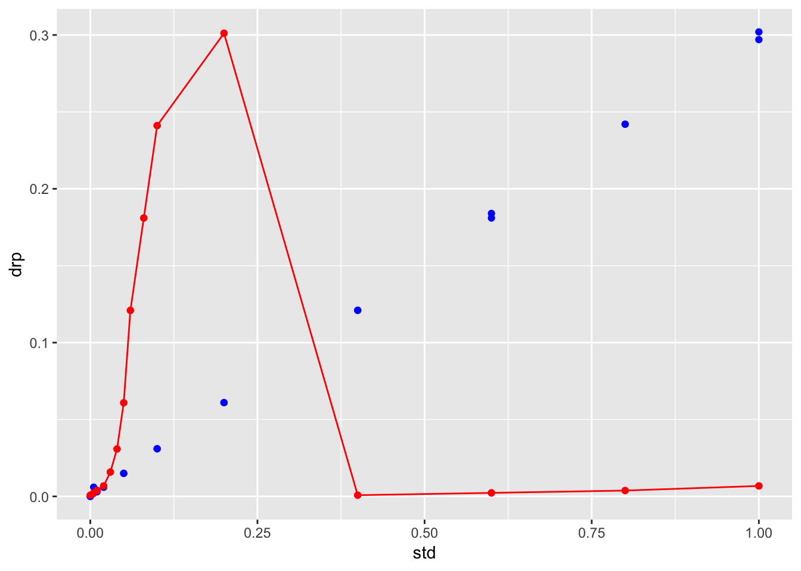
##Other packages that do similiar things maybe better.
###The gvlma package can do a lot of this automatically {#gvlma}
#install.packages("gvlma")
# library(gvlma)
# Global test of model assumptions
gvmodel <- gvlma(drp.model)
summary(gvmodel)##
## Call:
## lm(formula = drp ~ std, data = stds.df)
##
## Residuals:
## Min 1Q Median 3Q Max
## -0.0041414 -0.0008169 0.0000548 0.0001750 0.0036839
##
## Coefficients:
## Estimate Std. Error t value Pr(>|t|)
## (Intercept) 0.0008144 0.0004281 1.902 0.0716 .
## std 0.3003270 0.0009545 314.640 <0.0000000000000002 ***
## ---
## Signif. codes: 0 '***' 0.001 '**' 0.01 '*' 0.05 '.' 0.1 ' ' 1
##
## Residual standard error: 0.001534 on 20 degrees of freedom
## (8 observations deleted due to missingness)
## Multiple R-squared: 0.9998, Adjusted R-squared: 0.9998
## F-statistic: 9.9e+04 on 1 and 20 DF, p-value: < 0.00000000000000022
##
##
## ASSESSMENT OF THE LINEAR MODEL ASSUMPTIONS
## USING THE GLOBAL TEST ON 4 DEGREES-OF-FREEDOM:
## Level of Significance = 0.05
##
## Call:
## gvlma(x = drp.model)
##
## Value p-value Decision
## Global Stat 11.05709 0.02593 Assumptions NOT satisfied!
## Skewness 0.01239 0.91138 Assumptions acceptable.
## Kurtosis 6.20162 0.01276 Assumptions NOT satisfied!
## Link Function 3.00386 0.08307 Assumptions acceptable.
## Heteroscedasticity 1.83923 0.17504 Assumptions acceptable.##Advanced
This is all secondary and more advanced items that you may or may not wish to deal with.
We can also look to see what is in the model that is stored as Values
class(drp.model)## [1] "lm"names(drp.model)## [1] "coefficients" "residuals" "effects" "rank"
## [5] "fitted.values" "assign" "qr" "df.residual"
## [9] "na.action" "xlevels" "call" "terms"
## [13] "model"methods(class = class(drp.model))[1:9]## [1] "add1.lm" "alias.lm" "anova.lm" "Anova.lm" "augment.lm"
## [6] "avPlot.lm" "Boot.lm" "bootCase.lm" "boxCox.lm"The code above came from
http://tutorials.iq.harvard.edu/R/Rstatistics/Rstatistics.html
there are a lot of good examples of comparing models and a lot more about regression not included here.
###Different code for a QQPlot for normality
qqPlot(drp.model, main="QQ Plot") #qq plot for studentized resid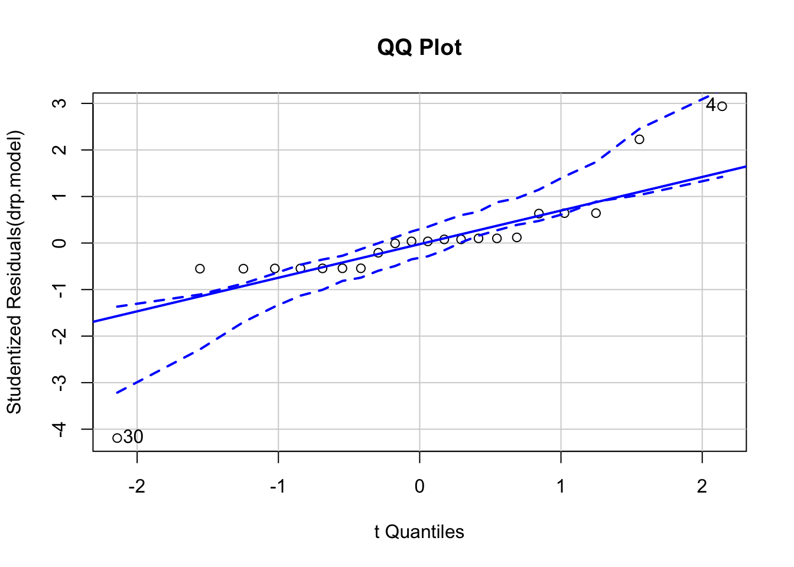
## [1] 4 30###leverage plots
leveragePlots(drp.model) # leverage plots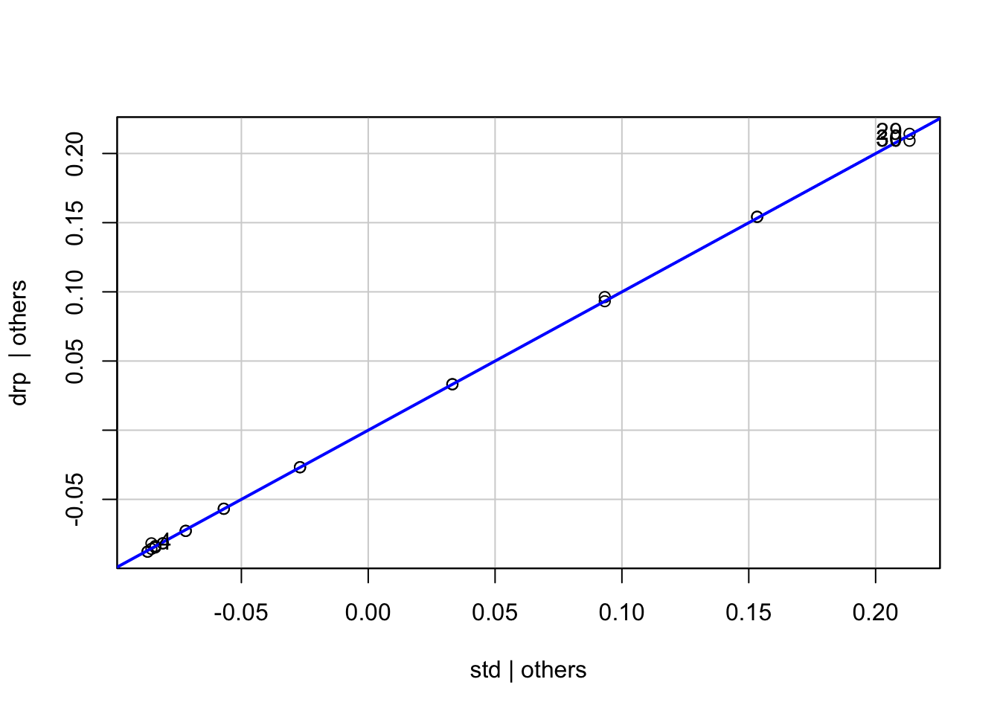
###Assess the role of outliers
# Assessing Outliers
outlierTest(drp.model) # Bonferonni p-value for most extreme obs## rstudent unadjusted p-value Bonferroni p
## 30 -4.190688 0.00049574 0.010906###Examine the influence plot using Cook’s Distance
# Influence Plot
influencePlot(drp.model, id.method="identify", main="Influence Plot", sub="Circle
size is proportial to Cook's Distance" )## Warning in plot.window(...): "id.method" is not a graphical parameter## Warning in plot.xy(xy, type, ...): "id.method" is not a graphical parameter## Warning in axis(side = side, at = at, labels = labels, ...): "id.method" is
## not a graphical parameter
## Warning in axis(side = side, at = at, labels = labels, ...): "id.method" is
## not a graphical parameter## Warning in box(...): "id.method" is not a graphical parameter## Warning in title(...): "id.method" is not a graphical parameter## Warning in plot.xy(xy.coords(x, y), type = type, ...): "id.method" is not a
## graphical parameter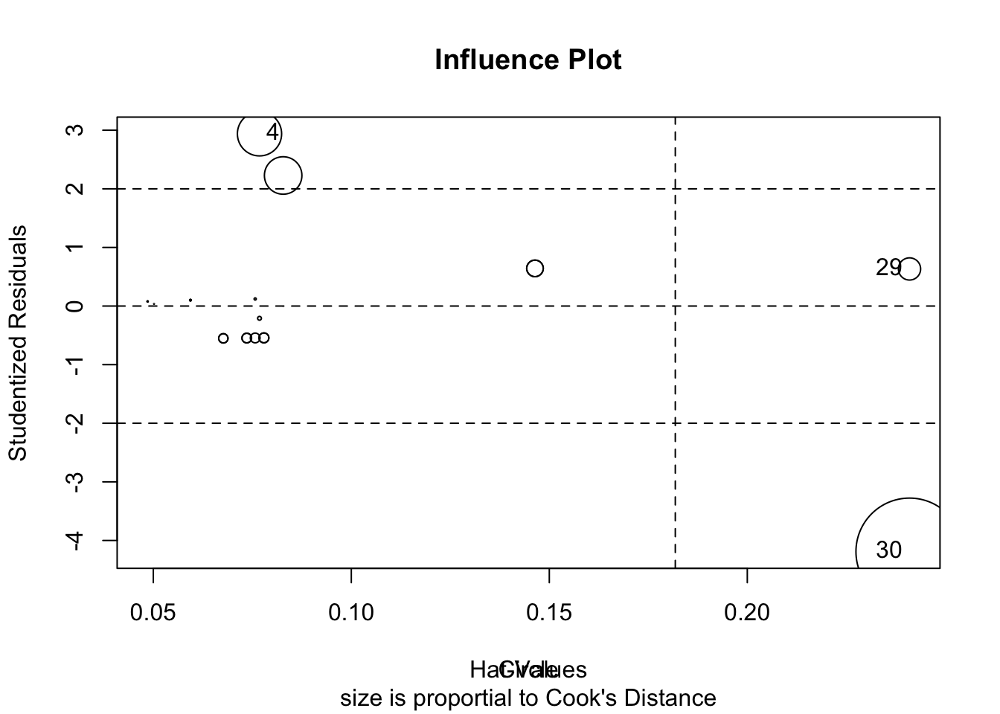
## StudRes Hat CookD
## 4 2.9387711 0.07681676 0.26002703
## 29 0.6328987 0.24096771 0.06554698
## 30 -4.1906880 0.24096771 1.52489835###Plot studentized residuals vs. fitted values
# plot studentized residuals vs. fitted values
spreadLevelPlot(drp.model)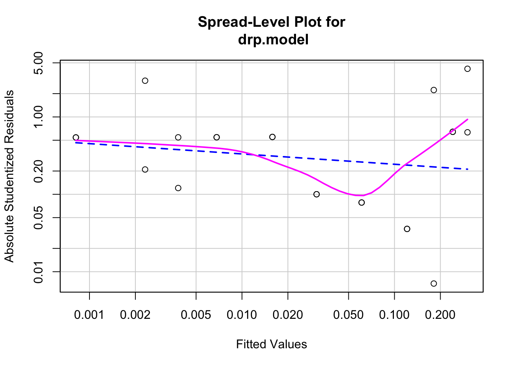
##
## Suggested power transformation: 1.133278Non‐independence of Errors
# Test for Autocorrelated Errors
durbinWatsonTest(drp.model)## lag Autocorrelation D-W Statistic p-value
## 1 0.02442015 1.572472 0.21
## Alternative hypothesis: rho != 0###STANDARDIZED REGRESSION - CONVERTED TO Z SCORES
# # Regression analyses, standardized
drp_z.model <- lm(scale(stds.df$drp) ~ scale(stds.df$std))
summary(drp_z.model)##
## Call:
## lm(formula = scale(stds.df$drp) ~ scale(stds.df$std))
##
## Residuals:
## Min 1Q Median 3Q Max
## -0.039325 -0.007757 0.000520 0.001661 0.034981
##
## Coefficients:
## Estimate Std. Error t value Pr(>|t|)
## (Intercept) -0.180268 0.003157 -57.1 <0.0000000000000002 ***
## scale(stds.df$std) 0.904027 0.002873 314.6 <0.0000000000000002 ***
## ---
## Signif. codes: 0 '***' 0.001 '**' 0.01 '*' 0.05 '.' 0.1 ' ' 1
##
## Residual standard error: 0.01456 on 20 degrees of freedom
## (8 observations deleted due to missingness)
## Multiple R-squared: 0.9998, Adjusted R-squared: 0.9998
## F-statistic: 9.9e+04 on 1 and 20 DF, p-value: < 0.00000000000000022# # The function fitted returns predicted scores whereas the function resid returns residuals
# # THIS IS HOW TO SAVE THE RESIDUALS INTO THE VARIABLE E FOR EROR
# ex$e <- resid(modelweight_lenght.z)###Confidence intervals of the standardized regression
confint(drp_z.model)## 2.5 % 97.5 %
## (Intercept) -0.1868536 -0.1736817
## scale(stds.df$std) 0.8980341 0.9100209